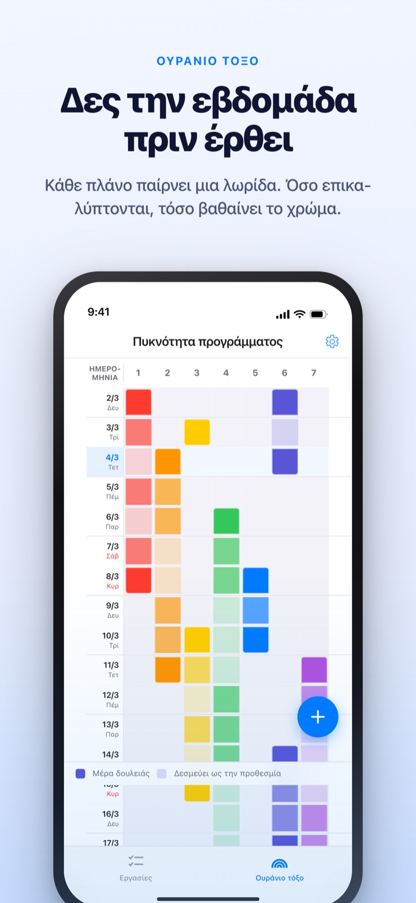
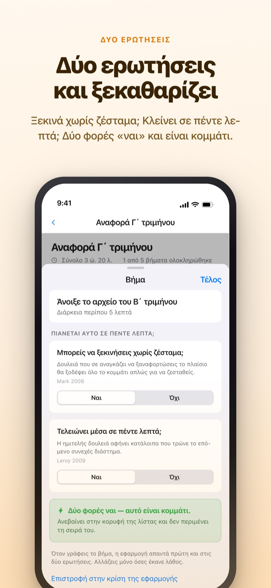
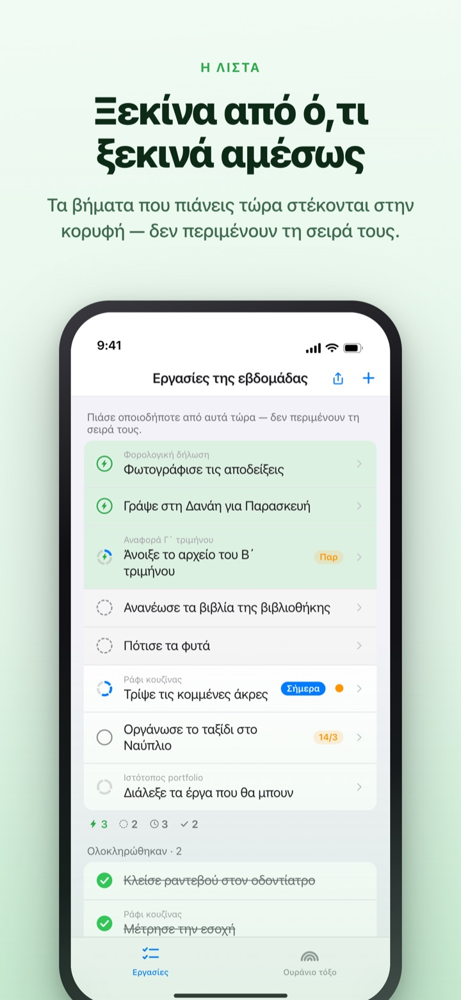
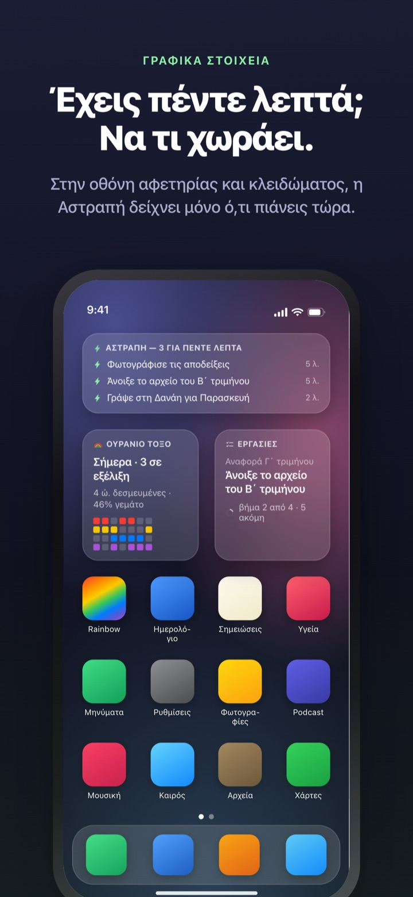

Δες τη βαριά εβδομάδα να έρχεται.
Αξιοποίησε τα ελεύθερα πέντε λεπτά.
Όσο περισσότερο επικαλύπτονται οι δουλειές, τόσο βαθαίνει το ουράνιο τόξο. Σπάσε μια μεγάλη εργασία σε βήματα, και αυτό που χωράει σε ένα κενό σε περιμένει ήδη στην κορυφή.
Το ουράνιο τόξο, το σπάσιμο εργασιών, το χρονόμετρο και ο συγχρονισμός με Mac είναι δωρεάν.

Δοκίμασέ το
Η «Αναφορά γ΄ τριμήνου» έχει ήδη σπάσει σε πέντε βήματα. Διάλεξε ένα, άλλαξε τον χρόνο ή γύρνα μια απάντηση. Μόνο ένα βήμα με δύο «ναι» γίνεται κομμάτι που κάνεις σε πέντε λεπτά.
Το ημερολόγιο μοιάζει άδειο, κι όμως η εβδομάδα σου κόβει την ανάσα;
Το ημερολόγιο λέει αν κάτι είναι προγραμματισμένο, όχι πόσα στοιβάζονται από πάνω. Ότι τρεις προθεσμίες έπεσαν στην ίδια εβδομάδα το καταλαβαίνεις συνήθως όταν είσαι ήδη μέσα της, και τα πέντε ελεύθερα λεπτά ανάμεσα φεύγουν ξαναδιαβάζοντας τη λίστα εργασιών. Το Rainbow of Desire σχεδιάζει την εβδομάδα σαν πλέγμα, σκουραίνει όπου υπάρχει επικάλυψη και κρατά στην άκρη τα βήματα που χωράνε σε ένα κενό.
Δύο ερωτήσεις, και ξεκαθαρίζει
Όταν σπας μια μεγάλη εργασία, κάθε βήμα παίρνει δύο ερωτήσεις. Μπορείς να ξεκινήσεις χωρίς ζέσταμα; Τελειώνει μέσα σε πέντε λεπτά;
Μόνο ένα διπλό ναι το κάνει κομμάτι. Η εφαρμογή απαντά πρώτη με βάση τον χρόνο και τις λέξεις, κι εσύ γυρνάς μια απάντηση μόνο όταν είναι λάθος.

Βρήκες κενό; Κοίτα μόνο την κορυφή
Σύρε μια εργασία δεξιά για να της βάλεις αστραπή, και θα προσπεράσει την ουρά για να σταθεί πρώτη. Δεν χρειάζεται να διαβάσεις όλη τη λίστα.
Αν τα βήματα περιμένουν το ένα το άλλο το ορίζεις μία φορά ανά ομάδα. Με σειρά δείχνει το πρώτο ανολοκλήρωτο βήμα, Χωρίς σειρά το κομμάτι που μπορείς να πιάσεις τώρα.

Φαίνεται χωρίς να ανοίξεις την εφαρμογή
Το χρονόμετρο μετρά μέχρι τη στιγμή που τελειώνει το συμβάν, και ο υπόλοιπος χρόνος φαίνεται και στο Dynamic Island και στην οθόνη κλειδώματος.
Τα γραφικά στοιχεία στην οθόνη αφετηρίας και κλειδώματος δείχνουν με τι ασχολείσαι, τι χωράει σε πέντε λεπτά και το ουράνιο τόξο της εβδομάδας. (Τα γραφικά στοιχεία είναι στο Pro)

Ξεκινάς σε τρία βήματα
- 1
Τράβηξε ένα συμβάν
Κράτα πατημένο ένα κενό κελί την ημέρα έναρξης και πάτα την ημέρα λήξης. Μια γραμμή εμφανίζεται στο ουράνιο τόξο.
- 2
Σπάσε τα μεγάλα
Πάτα μια εργασία, γράψε τα βήματα και διάλεξε χρόνο. Στις δύο ερωτήσεις απαντά πρώτα η εφαρμογή.
- 3
Στο κενό, κοίτα πάνω
Τα κομμάτια και οι εργασίες με αστραπή μαζεύονται στην κορυφή χωρίς να περιμένουν σειρά.
Τι θα δεις στην οθόνη
- Σκούρο κελί · ανοιχτό κελί
- οι μέρες που πραγματικά δουλεύεις πάνω του, και το υπόλοιπο διάστημα ως τη λήξη
- Γεμάτη σειρά
- μια μέρα με τόσα παράλληλα, που μία καθυστέρηση μετακινεί όλη τη μέρα
- Κομμάτι
- ναι και στις δύο ερωτήσεις· πιάσ’ το όταν έχεις πέντε λεπτά
- Σύντομο συνεχές διάστημα
- χωρίς ζέσταμα, αλλά δεν τελειώνει σε ένα κομμάτι· γίνεται με μία καθισιά
- Συνεχές διάστημα
- θέλει ζέσταμα ή κρατά 45 λεπτά και πάνω· μπαίνει σε χρόνο που έχεις κρατήσει
- Αστραπή
- το δικό σου σημάδι «αμέσως»· ανεβαίνει στην κορυφή
- Με σειρά · Χωρίς σειρά
- αν τα βήματα περιμένουν το ένα το άλλο, ορίζεται μία φορά ανά ομάδα
- Καθολικό
- ο απολογισμός της εβδομάδας: ό,τι απομένει, ο χρόνος που κερδήθηκε πίσω και η ξεκούραση, χωριστά και ποτέ αθροισμένα
Ο χρόνος αθροίζεται από κάτω προς τα πάνω: ο χρόνος μιας εργασίας είναι το άθροισμα των βημάτων της.
Ό,τι χρειάζεσαι για σήμερα είναι δωρεάν
Δωρεάν
- Το ουράνιο τόξο (πλέγμα πυκνότητας προγράμματος)
- Σπάσιμο σε βήματα και οι δύο ερωτήσεις
- Αστραπή και σειρά βημάτων
- Χρονόμετρο στο Dynamic Island και στην οθόνη κλειδώματος
- Συγχρονισμός με το Rainbow Craft για Mac μέσω iCloud
- Το Καθολικό των δύο τελευταίων εβδομάδων
Rainbow Plus · Rainbow Pro
- Plus: στατιστικά συμβάντων και Καθολικό πέρα από τις δύο εβδομάδες
- Pro: όλο το Plus μαζί με γραφικά στοιχεία οθόνης αφετηρίας και κλειδώματος
- Pro: εισαγωγή από το Ημερολόγιο με συνεχή προβολή
- Pro: κοινή χρήση συμβάντων μόνο για ανάγνωση
- Pro: ξεκλειδώνει και το Rainbow Craft Pro στο Mac
Το καθένα ως ετήσια συνδρομή ή εφάπαξ αγορά για πάντα
Πληρώνεις μόνο για να κοιτάς πίσω σε περασμένες εβδομάδες και για να βγάζεις πράγματα έξω από την εφαρμογή. Αν είχες αγοράσει Pro παλιότερα ή έχεις ακόμη μηνιαία συνδρομή, παραμένεις Pro.
Συχνές ερωτήσεις
Χρειάζομαι λογαριασμό ή iCloud;
Αν τη χρησιμοποιείς μόνος σου, όχι. Δεν υπάρχει εγγραφή και όλα μένουν στη συσκευή. Για άλλη συσκευή, την εφαρμογή Mac ή κοινή χρήση, συνδέσου στο iCloud.
Η εφαρμογή απάντησε λάθος σε μια ερώτηση.
Πάτα το βήμα και άλλαξε Ναι ή Όχι. Η δική σου απάντηση προηγείται πάντα. Πάτα «Επιστροφή στην κρίση της εφαρμογής» για να της την ξαναδώσεις. Ένα βήμα χωρίς χρόνο δεν μετρά ως κομμάτι, γιατί η εφαρμογή δεν ξέρει αν τελειώνει σε πέντε λεπτά.
Μπορώ να μοιραστώ με άλλους;
Με σύνδεσμο πρόσκλησης μοιράζεσαι τα συμβάντα σου μόνο για ανάγνωση (Pro) ή ανοίγεις μια λίστα εργασιών που εσύ και οι προσκεκλημένοι διαβάζετε και επεξεργάζεστε μαζί. Όποιος έχει τον σύνδεσμο μπορεί να μπει, οπότε στείλ’ τον μόνο σε όσους θέλεις. Δεν έχει σχέση με την Οικογενειακή κοινή χρήση της Apple.
Εμφανίζονται τα συμβάντα του Ημερολογίου;
Τα συμβάντα από τα ημερολόγια που επιλέγεις εμφανίζονται στο ουράνιο τόξο και στην προβολή ημέρας (Pro). Η εφαρμογή μόνο τα διαβάζει και δεν γράφει τίποτα.
Μπορώ να τσεκάρω από γραφικό στοιχείο;
Τα γραφικά στοιχεία είναι μόνο για προβολή. Πάτα ένα και ανοίγουν αμέσως οι εργασίες σου, τσέκαρε από εκεί.
Η εφαρμογή για Mac αγοράζεται χωριστά;
Το Rainbow Craft είναι ξεχωριστή εφαρμογή macOS στο Mac App Store. Με τον ίδιο λογαριασμό iCloud, εργασίες και εβδομαδιαία πλάνα συγχρονίζονται μόνα τους, χωρίς χρέωση.
Οι παλιές μου εργασίες είναι ακόμη εκεί;
Ναι. Εργασίες, βήματα και χρόνοι που όρισες μένουν όπως ήταν. Τις ετικέτες των παλιών συνθηκών έναρξης η εφαρμογή τις ξανακρίνει με τις δύο ερωτήσεις.
Πού αποθηκεύονται τα δεδομένα μου;
Δεν υπάρχει διακομιστής. Όλα βρίσκονται στη συσκευή σου και στο προσωπικό σου iCloud, όπου ο δημιουργός δεν βλέπει. Χωρίς αναγνωριστικό διαφημίσεων, χωρίς τοποθεσία. Η εφαρμογή στέλνει μόνο ανώνυμα στατιστικά χρήσης που δεν σε ταυτοποιούν και κλείνουν από τις Ρυθμίσεις.
Πώς ακυρώνω μια συνδρομή;
Στις Ρυθμίσεις > Λογαριασμός Apple > Συνδρομές. Ανανεώνεται στην ίδια τιμή αν δεν την ακυρώσεις τουλάχιστον 24 ώρες πριν λήξει η περίοδος. Η αγορά για πάντα πληρώνεται μία φορά.
Κόλλησες ή κάτι δεν φαίνεται σωστό; Γράψε στο leeo@kakao.com. Θα βρεις επιλογή επικοινωνίας και στις ρυθμίσεις της εφαρμογής.